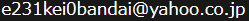

コンテンツ

写真帖
今まで撮りためてきたマルチジャンル(電車と風景多め)の写真アルバム。

保存車両
全国で静態・動態保存されている鉄道車両の訪問記録。

京成電鉄
京成電鉄と乗り入れ車両の写真や出来事などの記録。
路面電車
全国各地の路面電車の写真と沿線の様子。

探訪
個人的に興味の惹かれる場所に行ってきた記録。

ブログ
更新頻度の低い雑記ブログ。(新しいタブで開きます)
はじめに
ようこそお越しくださいました。弊サイトは趣味で撮影した写真の公開、及びウェブサイト作成技術の向上を目的として運営を行っております。個人が趣味で運営しているものであり、情報の信憑性に関する保証は致しかねます。
弊サイトはHTML5を使用し作成しています。閲覧にはGoogle Chrome、Microsoft Edge(Chromiumベース)の使用を推奨いたします。
弊サイトで公開を行っている写真の著作権は管理人に帰属します。第三者がインターネット上に転載するなどの個人的な利用を超えた行為はご遠慮願います。
管理人:勿来吝人,
E-mail:
更新履歴
2024-01-13
2024-01-09
9800形を公開
2023-11-23
京成電鉄に京浜急行電鉄の車両を公開
2023-10-29
京成電鉄に北総鉄道の車両を公開
2023-09-10
5500形を公開
2023-05-04
生田緑地を公開
2023-04-13
昨今のTwitterの運営方針へのささやかな抵抗としてツイートボタンを非表示にしました。
2023-04-05
福井鉄道を公開
2023-02-15
D51 502を公開
2022-11-26
都電7022号を公開
2022-11-25
2022-06-07
富山地方鉄道を公開
2022-05-21
万葉線を公開
2022-01-29
マイマップ&DB検索を試験公開
2021-06-23
桃花台新交通桃花台線を更新
2021-02-02
横浜市電1518号を公開
2021-01-18
クモエ21001を公開
2020-12-30
2020-12-21
佐原の街を歩くを公開
2020-12-17
2020-09-24
東京総合車両センターを公開
2020-09-18
2020-08-18
サイト試験公開